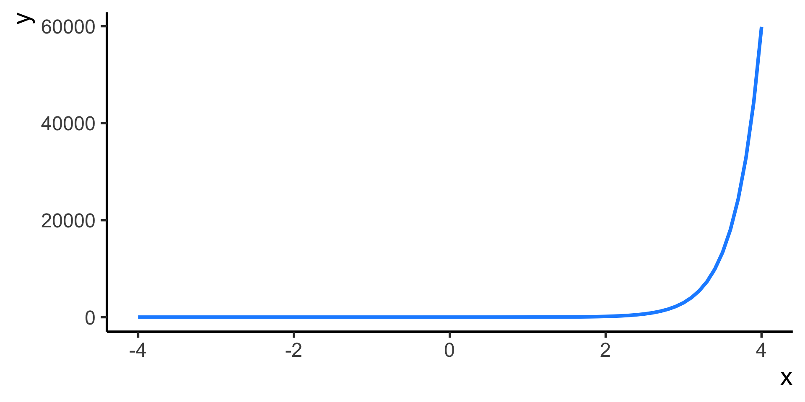
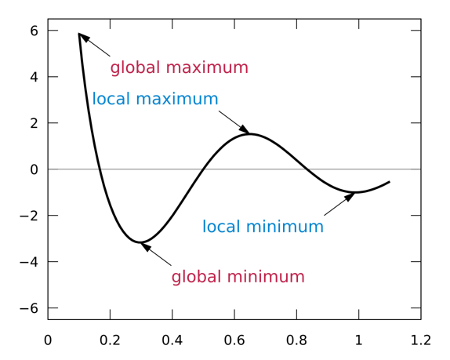
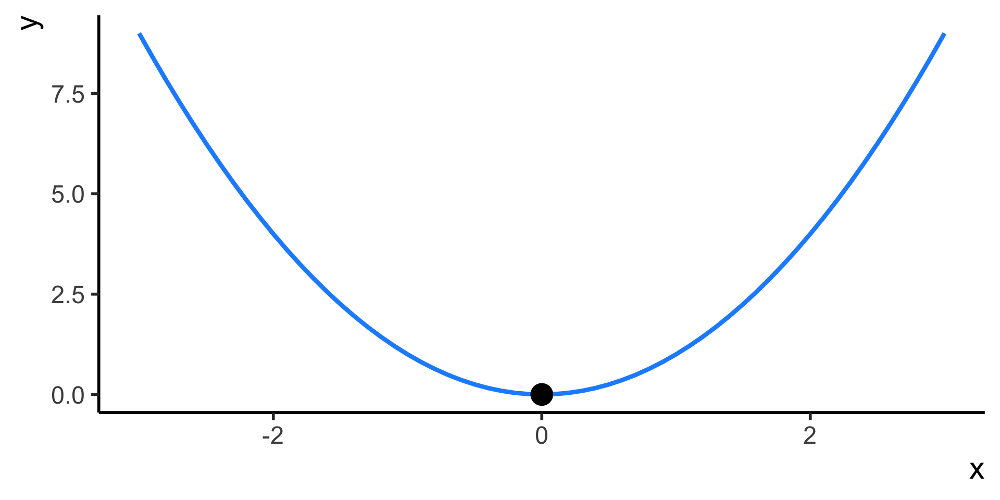

Understanding Gradient Descent
Mathematics for Machine Learning
During the Next Two Days
We will try to understand how statistical packages compute coefficients for linear regression and logistic regression.
We will try to understand some of the mathematical details
We won’t do any coding
Functions
What is a Function?
Given two sets, a function is a relationship that associates to each element of the first set, one and only one element of the second set.
If \(f\) is a function from the set \(X\) to the set \(Y\) we write
\[f: X \to Y\]
The element \(y\) of \(Y\) associated by \(f\) to the element \(x\) of \(X\) is denoted by \(f(x)\). Therefore we write
\[y = f(x)\]
Constant Function
\[y = 4\]
Identity Function
\[y = x\]
Linear Function
\[y = 3x + 2\]
Quadratic Function
\[y = x^2 + x - 20\]
Cubic Function
\[y = x^3 - 7x + 6\]
Hyperbola
\[y = \frac{1}{x}\]
Hyperbola (translated)
\[y = \frac{1}{x - 2} + 3\]
Exponential
\[y = e^x\]
Exponential (translated)
\[y = e^{3x - 1} + 2\]
Logistic Function
\[y = \frac{1}{1 + e^{-x}}\]
Logarithm
\[y = \log x\]
Logarithm (simmetry around \(x\)-axis)
\[y = - \log x\]

Another Logarithmic Function
\[y = \log (1-x)\]
Linear Functions
Slope of a Line
The equation of a line on a plane is
\[y = mx + c\]
where
- \(m\) is called slope (or gradient)
- \(c\) is the \(y\)-intercept (the \(y\) coordinate where the line crosses the \(y\)-axis)
Given two points on a line, its slope can is calculated with
\[m = \frac{\Delta y}{\Delta x} = \frac{y_2 - y_1}{x_2 - x_1}\]
Secant Line

\[m = \frac{\Delta f}{\Delta x} = \frac{f(x + h) - f(h)}{(x + h) - x} = \frac{f(x + h) - f(h)}{h}\]
Crash Course in Differential Calculus
Tangent Line
\[m = \frac{df}{dx}(x) = \lim_{h \to 0}\frac{f(x + h) - f(h)}{h}\]
Derivative
- The derivative of a function \(f\) at the point \(x_0\) is a number that represents the slope of the tangent line to the function \(f\) at the point \(x_0\). It is denoted by
\[\frac{df}{dx}(x_0)\].
- The function that maps each \(x\) to the value of the derivative of \(f\) at \(x\) is called derivative function, but often is called just derivative. It is denoted by
\[\frac{df}{dx}\].
Algebra of Derivatives
How to compute derivatives?
Power Rule
\[\text{If} \quad f(x) = x^r \quad \text{then} \quad \frac{df}{dx} = rx^{r-1}\]
for any number \(r \neq 0\).
\[\text{If} \quad f(x) = 1 \quad \text{then} \quad \frac{df}{dx} = 0.\]
Power Rule (Examples)
Find the derivatives of the following functions:
- \(f(x) = x^2\)
- \(f(x) = x^7\)
- \(f(x) = 1\)
Sum Rule (Linearity of the Derivative)
Asumming that \(f(x) = ag(x) + bh(x)\) then \[\frac{df}{dx} = a\frac{dg}{dx} + b\frac{dh}{dx}\] for any numbers \(a, b\) and any functions \(g, h\).
Sum Rule (Examples)
Find the derivatives of the following functions:
- \(f(x) = x + x^3\)
- \(f(x) = 3x^2 - 1\)
- \(f(x) = 2x^5 - 4x^4 + 5\)
Exponentials and Logarithms
If \(f(x) = e^x\) then \[\frac{df}{dx} = e^x\]
If \(f(x) = \log x\) then \[\frac{df}{dx} = \frac{1}{x}\]
Exponentials and Logarithms (Examples)
Find the derivatives of the following functions:
- \(f(x) = 3e^x + 4x\)
- \(f(x) = x + 2\log x\)
- \(f(x) = 5 - e^x - 3\log x\)
Chain Rule
Asumming that \(f(x) = g(h(x))\) then we write \[f(x) = g(h)\] and it follows \[\frac{df}{dx} = \frac{dg}{dh} \frac{dh}{dx}\] for any functions \(g, h\).
Example
Find the derivative of
\[f(x) = (x + 1)^2\]
Example
Find the derivative of
\[f(x) = (x + 8)^{11}\]
Example
Find the derivative of
\[f(x) = (5 - 4x^2)^3\]
Example
Find the derivative of
\[f(x) = e^{3x - 2}\]
Example
Find the derivative of
\[f(x) = e^{-4x}\]
Example
Find the derivative of
\[f(x) = \log(1 + x)\]
Example
Find the derivative of
\[f(x) = \log(3 - x)\]
Why Derivatives are Immportant?
Differential calculus allow us to find local maximums and local minimums of functions. These are where the derivative is equal to zero.
Example
Find the max and min of the function \(f(x) = x^3 - 7x + 6\).
Example
Find the max and min of the function \(f(x) = x^3 - 7x + 6\).
We have
\[\frac{df}{dx} = 3x^2 - 7\]
Then
\[\frac{df}{dx} = 0 \quad \text{if} \quad x = \pm \sqrt{7/3} \]
Moreover
\[f\left(-\sqrt{7/3}\right) \approx 13.1 \qquad f\left(\sqrt{7/3}\right) \approx 1.5\]
What if Calculations are Too Complicated?
There are strategies to approximate the values.
Gradient Descent

The idea is to start from a random point and then update our approximation of the \(x\)-coordinate of the minimum by going opposite of the direction of the gradient at that point
Gradient Descent Algorithm
Goal: find the minimum of \(f(x)\).
- Fix a value \(\alpha\). This will be called the learning rate
- Start from a point \(x_1\)
- Update the \(x\)-coordinate using the formula \[ x_{n+1} = x_n - \alpha \frac{df}{dx}(x_n)\] for example \[ x_2 = x_1 - \alpha \frac{df}{dx}(x_1) \quad \dots \quad x_{137} = x_{136} - \alpha \frac{df}{dx}(x_{136}) \quad \dots\]
- Repeat many times!
Example
Given \[f(x) = x^2\] we have \[\frac{df}{dx} = 2x\]

minimum at \(x = 0\)
Example (simulation results)
\(\alpha = 0.1\), \(x_1 = 5\), \(n = 1000\) (number of epochs)
First 10 iterations
# A tibble: 10 × 4
epoch x y der
<int> <dbl> <dbl> <dbl>
1 1 5 25 25
2 2 4 16 16
3 3 3.2 10.2 10.2
4 4 2.56 6.55 6.55
5 5 2.05 4.19 4.19
6 6 1.64 2.68 2.68
7 7 1.31 1.72 1.72
8 8 1.05 1.10 1.10
9 9 0.839 0.704 0.704
10 10 0.671 0.450 0.450Last 10 iterations
# A tibble: 10 × 4
epoch x y der
<int> <dbl> <dbl> <dbl>
1 991 5.73e-96 3.28e-191 3.28e-191
2 992 4.58e-96 2.10e-191 2.10e-191
3 993 3.67e-96 1.34e-191 1.34e-191
4 994 2.93e-96 8.60e-192 8.60e-192
5 995 2.35e-96 5.51e-192 5.51e-192
6 996 1.88e-96 3.52e-192 3.52e-192
7 997 1.50e-96 2.26e-192 2.26e-192
8 998 1.20e-96 1.44e-192 1.44e-192
9 999 9.61e-97 9.24e-193 9.24e-193
10 1000 7.69e-97 5.91e-193 5.91e-193Why do We Need this for Machine Learning?
Linear Regression
Given the set of observed values
\[\left\{ \left( x^{(i)}, y^{(i)} \right) \right\}_{i = 1}^N\]
we would like to fit the model
\[y = \beta_0 + \beta_1 x\]
Linear Regression
Model
The model used for linear regression (with one predictor) is given by
\[h(x) = \beta_0 + \beta_1 x \qquad \beta_0, \beta_1 \in \mathbb{R}\]
Problem
How can we find the best \(\beta_0\) and \(\beta_1\)?
For Example

How do we find the “best” one?
Statement of the Problem
Since
\[h(x^{(i)}) = \beta_0 + \beta_1 x^{(i)} \quad \text{for} \quad i = 1, \dots, N\] then our problem, also know as ordinary least squares (OLS), is
\[ \min_{\beta_0, \beta_1} \left[ \frac{1}{N} \sum_{i = 1}^N \left( \beta_0 + \beta_1 x^{(i)} - y^{(i)} \right)^2 \right] \]
For Example


Back to our Problem
In other words we would like to find the minimum of
\[ \mathcal{L} (\beta_0, \beta_1) = \frac{1}{N} \sum_{i = 1}^N \left( \beta_0 + \beta_1 x^{(i)} - y^{(i)} \right)^2 \]
but the function \(\mathcal{L} (\beta_0, \beta_1)\) has two variables…
Functions of More Variables
We will talk about functions of two variables, but the following applies to functions o an arbitrary finite number of variables
Function of Two Variables
Given three sets \(X\), \(Y\) and \(Z\), a function is a relationship that associates to each pair \((x, y)\) of \(X \times Y\) (the set of all possible pairs), one and only one element of \(Z\).
If \(f\) is a function from the set \(X \times Y\) to the set \(Z\) we write
\[f: X \times Y \to Z\]
The element \(z\) of \(Z\) associated by \(f\) to the pair \((x, y)\) of \(X \times Y\) is denoted by \(f(x, y)\). Therefore we write
\[z = f(x, y)\]
Examples
- \(f(x, y) = 2x + 3y\)
- \(f(a, b) = \log(1 - ab)\)
- \(f(\alpha_1, \alpha_2) = e^{\alpha_2^2 - 4\alpha_1}\)
Observe that the name of the variables is not really important. For example the functions
- \(f(m, n) = \log(1 - m^2n) + 3m - 2n^2\)
- \(f(x, y) = \log(1 - x^2y) + 3x - 2y^2\)
are the same!
Another (Key) Point of View
Given the function
\[f(x, y) = x^3 - xy^2 + y\]
it can be can be interpreted as a family of functions depending on one of these variables and indexed by the other. In this case we have two options
\[f(x, y) = f_y(x) \quad \text{or} \quad f(x, y) = f_x(y)\]
Another (Key) Point of View
Given the function
\[f(x, y) = x^3 - xy^2 + y\]
we have
- if \(y = 3\) then \(f_3(x) = x^3 + 9x + 3\)
- if \(x = 2\) then \(f_2(y) = 8 + 2y^2 + y\)
- if \(x = 4\) then \(f_4(y) = 64 + 4y^2 + y\)
What about the Derivative?
Given the function \(f(x, y)\) we can evaluate the derivative of the function considering the index as a constant. We have two options (for a function of two variables):
\[\frac{\partial f}{\partial x} = \frac{df_y}{dx} \quad \text{and} \quad \frac{\partial f}{\partial y} = \frac{df_x}{dy}\]
These are also known as partial derivatives.
Another (Key) Point of View
Given the function
\[f(x, y) = x^3 - xy^2 + y\]
We have
\[\frac{\partial f}{\partial x} = \frac{df_y}{dx} = 3x^2 - y^2\]
\[\frac{\partial f}{\partial y} = \frac{df_x}{dy} = 2xy + 1\]
Partial Derivatives Examples
Find the partial derivatives of the following functions:
- \(f(x, y) = x^2y + x^2y^2 + xy^2\)
- \(f(x) = (3x^2 -2y^3)^5\)
- \(f(x) = \log(1 - xy)\)
Partial Derivatives (another) Example
Find the partial derivatives of the following function:
\[f(\alpha_1, \alpha_2) = \sum_{i = 1}^n (\alpha_1 x_i + \alpha_2^2 y_i)\]
Partial Derivatives (another) Example
Find the partial derivatives of the following function:
\[f(\alpha_1, \alpha_2) = \sum_{i = 1}^n (\alpha_1 x_i + \alpha_2 y_i)^2\]
How Can we Find Max’s and Min’s?
Given the function \(f(x, y)\) maximums and minimums land where both partial derivatives are equal to zero. Hence we want to solve the following equations:
\[\frac{\partial f}{\partial x} = 0 \quad \text{and} \quad \frac{\partial f}{\partial y} = 0\]
What about Gradient Descent?
Goal: find the minimum of \(f(x, y)\).
- Fix a value \(\alpha\) (learning rate)
- Start from a point \((x_1, y_1)\)
- Update the coordinates using the formulas \[ x_{n+1} = x_n - \alpha \frac{\partial f}{\partial x}(x_n, y_n) \quad \text{and} \quad y_{n+1} = y_n - \alpha \frac{\partial f}{\partial y}(x_n, y_n)\] for example \[ x_{2} = x_1 - \alpha \frac{\partial f}{\partial x}(x_1, y_1) \quad \text{and} \quad y_{2} = y_1 - \alpha \frac{\partial f}{\partial y}(x_1, y_1)\] \[...\] \[ x_{137} = x_{136} - \alpha \frac{\partial f}{\partial x}(x_{136}, y_{136}) \quad \text{and} \quad y_{137} = y_{136} - \alpha \frac{\partial f}{\partial y}(x_{136}, y_{136})\]
- Repeat many times!
Example
Given the function
\[f(x, y) = (2x - 3)^2 + (4y + 5)^2\]
The minumnum is at
\[(x, y) = (3/2, -5/4)\]
Example (simulation results)
\(\alpha = 0.06\), \(x_1 = -3\), \(y_1 = 1\), \(n = 100\)
First 10 iterations
# A tibble: 10 × 4
epoch x y f
<int> <dbl> <dbl> <dbl>
1 1 -3 1 162
2 2 -0.84 -3.32 90.5
3 3 0.283 0.654 64.0
4 4 0.867 -3.00 50.7
5 5 1.17 0.362 42.0
6 6 1.33 -2.73 35.3
7 7 1.41 0.114 29.8
8 8 1.45 -2.51 25.2
9 9 1.48 -0.0953 21.3
10 10 1.49 -2.31 18.1Last 10 iterations
# A tibble: 10 × 4
epoch x y f
<int> <dbl> <dbl> <dbl>
1 91 1.5 -1.25 0.0000246
2 92 1.5 -1.25 0.0000208
3 93 1.5 -1.25 0.0000176
4 94 1.5 -1.25 0.0000149
5 95 1.5 -1.25 0.0000126
6 96 1.5 -1.25 0.0000107
7 97 1.5 -1.25 0.00000903
8 98 1.5 -1.25 0.00000764
9 99 1.5 -1.25 0.00000647
10 100 1.5 -1.25 0.00000548Linear Regression
Linear Regression
Given the set of observed values
\[\left\{ \left( x^{(i)}, y^{(i)} \right) \right\}_{i = 1}^N\]
we would like to fit the model
\[y = \beta_0 + \beta_1 x\]
Square Loss
The coefficients \(\beta_0\) and \(\beta_1\) minimise the square loss
\[ \mathcal{L} \left( \beta_0, \beta_1\right) = \frac{1}{N}\sum_{i=1}^N \left( \hat{y}^{(i)} - y^{(i)} \right)^2 \]
where
\[\hat{y}^{(i)} = \beta_0 + \beta_1 x^{(i)}\]
Square Loss
Hence we want to minimise
\[ \mathcal{L} \left(\beta_0, \beta_1\right) = \frac{1}{N}\sum_{i=1}^N \left( \beta_0 + \beta_1 x^{(i)} - y^{(i)} \right)^2 \]
To simplify calculations we will try to minimise the function
\[ \mathcal{L} \left(\beta_0, \beta_1\right) = \frac{1}{2N}\sum_{i=1}^N \left( \beta_0 + \beta_1 x^{(i)} - y^{(i)} \right)^2 \]
Square Loss Partial Derivatives (\(\beta_0\))
\[ \mathcal{L} \left(\beta_0, \beta_1\right) = \frac{1}{2N}\sum_{i=1}^N \left( \beta_0 + \beta_1 x^{(i)} - y^{(i)} \right)^2 \]
The partial derivative of \(\mathcal{L}\) with respect to \(\beta_0\) is
Square Loss Partial Derivatives (\(\beta_1\))
\[ \mathcal{L} \left(\beta_0, \beta_1\right) = \frac{1}{2N}\sum_{i=1}^N \left( \beta_0 + \beta_1 x^{(i)} - y^{(i)} \right)^2 \]
The partial derivative of \(\mathcal{L}\) with respect to \(\beta_1\) is
Square Loss Partial Derivatives
The partial derivatives of the function
\[ \mathcal{L} \left(\beta_0, \beta_1\right) = \frac{1}{2N}\sum_{i=1}^N \left( \beta_0 + \beta_1 x^{(i)} - y^{(i)} \right)^2 \]
are given by
\[\frac{\partial \mathcal{L}}{\partial \beta_0} = \frac{1}{N}\sum_{i=1}^N \left( \beta_0 + \beta_1 x^{(i)} - y^{(i)} \right)\]
\[\frac{\partial \mathcal{L}}{\partial \beta_1} = \frac{1}{N}\sum_{i=1}^N \left( \beta_0 + \beta_1 x^{(i)} - y^{(i)} \right)x^{(i)}\]
Gradient Descent for Linear Regression
Goal: find \(\beta_0\) and \(\beta_1\) that minimise the square loss.
- Fix a value \(\alpha\) (learning rate)
- Start from a point \((\beta_{0_1}, \beta_{1_1})\)
- Update the coordinates using the formulas \[ \beta_{0_{n+1}} = \beta_{0_{n}} - \alpha \frac{\partial f}{\partial \beta_0}(\beta_{0_n}, \beta_{1_n}) \quad \text{and} \quad \beta_{1_{n+1}} = \beta_{1_{n}} - \alpha \frac{\partial f}{\partial \beta_1}(\beta_{0_n}, \beta_{1_n})\] hence \[ \beta_{0_{n+1}} = \beta_{0_{n}} - \alpha \frac{1}{N}\sum_{i=1}^N \left( \beta_{0_n} + \beta_{1_n} x^{(i)} - y^{(i)} \right)\]
\[ \beta_{1_{n+1}} = \beta_{1_{n}} - \alpha \frac{1}{N}\sum_{i=1}^N \left( \beta_{0_n} + \beta_{1_n} x^{(i)} - y^{(i)} \right)x^{(i)}\] 4. Repeat many times!
Simulation
\[y = -3 + 2x + \varepsilon \quad \text{where} \quad \varepsilon \sim \mathcal{N}(0, 1.5)\]
Simulation Results
\(\alpha = 0.02\), \(\beta_{0_{1}} = 40\), \(\beta_{1_{1}} = -10\), \(n = 2000\)
First 10 iterations
# A tibble: 10 × 4
epoch b_0 b_1 loss
<int> <dbl> <dbl> <dbl>
1 1 40 -10 1431.
2 2 40.3 -6.50 591.
3 3 40.3 -5.26 487.
4 4 40.1 -4.81 471.
5 5 40.0 -4.63 465.
6 6 39.7 -4.55 461.
7 7 39.5 -4.50 456.
8 8 39.3 -4.46 452.
9 9 39.1 -4.42 447.
10 10 38.9 -4.39 443.Last 10 iterations
# A tibble: 10 × 4
epoch b_0 b_1 loss
<int> <dbl> <dbl> <dbl>
1 1991 -3.11 2.02 2.32
2 1992 -3.11 2.02 2.32
3 1993 -3.11 2.02 2.32
4 1994 -3.11 2.02 2.32
5 1995 -3.11 2.02 2.32
6 1996 -3.11 2.02 2.32
7 1997 -3.11 2.02 2.32
8 1998 -3.11 2.02 2.32
9 1999 -3.11 2.02 2.32
10 2000 -3.11 2.02 2.32Simulation \(n = 1\)

Simulation \(n = 2\)
Simulation \(n = 3\)

Simulation \(n = 10\)
Simulation \(n = 20\)
Simulation \(n = 30\)
Simulation \(n = 100\)
Simulation \(n = 200\)
Simulation \(n = 300\)
Simulation \(n = 500\)
Simulation \(n = 1000\)
Simulation \(n = 1500\)
Simulation \(n = 2000\)
Logistic Regression
Logistic Function

Cross Entropy Loss
In classification problems a choice for the loss function is the cross entropy loss (CEL).
\[ \mathcal{L}(\beta_0, \beta_1) = -\frac{1}{N} \sum_{i = 1}^N \left(y^{(i)} \log \hat{y}^{(i)} + (1 - y^{(i)}) \log (1 - \hat{y}^{(i)}) \right) \]
where for \(i = 1, \dots, N\)
\[ \hat{y}^{(i)} = h(x^{(i)}) = \sigma(\beta_0 + \beta_1 x^{(i)}) = \frac{1}{1+e^{-(\beta_0 + \beta_1 x^{(i)})}} \]
So this is a function of \(\beta_0\) and \(\beta_1\) indeed!
Cross Entropy Loss?
Let’s focus on a single observation.
If \(y = 1\), then
\[\text{loss} = -\left(y \log \hat{y} + (1 - y) \log(1 - \hat{y}) \right)\]
becomes
\[\text{loss} = -\log \hat{y}\]
Hence the loss is lower for \(\hat{y}\) approaching \(1\).
If \(y = 0\), then
\[\text{loss} = -\left(y \log \hat{y} + (1 - y) \log(1 - \hat{y}) \right)\]
becomes
\[\text{loss} = -\log(1 - \hat{y})\]
Hence the loss is lower for \(\hat{y}\) approaching \(0\).
Want to See the Numbers?
Quotient Rule
Asumming that \[f(x) = \frac{g(x)}{h(x)}\] then \[\frac{df}{dx} = \frac{\frac{dg}{dx} h(x) - g(x) \frac{dh}{dx}}{h^2(x)}\] for any numbers any functions \(g, h\).
Derivative of the Logistic Function
Using Quotient Rule and Chain Rule \[ \begin{split} \frac{d\sigma}{dx} &= \frac{e^{-x}}{(1 + e^{-x})^2} \\ &= \frac{1 + e^{-x} - 1}{(1 + e^{-x})^2} = \frac{1}{1 + e^{-x}} - \frac{1}{(1 + e^{-x})^2} \\ &= \sigma(x) - \sigma^2(x) = \sigma(x)\left[ 1 - \sigma(x) \right] \end{split} \]
Logistic Regression
Given the set of observed values
\[\left\{ \left( x^{(i)}, y^{(i)} \right) \right\}_{i = 1}^N\]
we would like to fit the model
\[y = \sigma(\beta_0 + \beta_1 x) = \frac{1}{1+e^{-(\beta_0 + \beta_1 x)}}\]
The coefficients \(\beta_0\) and \(\beta_1\) minimise the cross entropy loss
CEL Partial Derivatives (\(\beta_0\))
\[ \begin{split} \frac{\partial\mathcal{L}}{\partial\beta_0} &= -\frac{1}{N} \sum_{i=1}^N \left[ \frac{y^{(i)}}{\hat{y}^{(i)}} \hat{y}^{(i)} (1 - \hat{y}^{(i)}) - \frac{1 - y^{(i)}}{1 - \hat{y}^{(i)}} \hat{y}^{(i)} (1 - \hat{y}^{(i)}) \right] \\ &= -\frac{1}{N} \sum_{i=1}^N \left[ y^{(i)} (1 - \hat{y}^{(i)}) - (1 - y^{(i)}) \hat{y}^{(i)} \right] \\ &= \frac{1}{N} \sum_{i=1}^N \left( \hat{y}^{(i)} - y^{(i)} \right) \end{split} \]
CEL Partial Derivatives (\(\beta_1\))
\[ \begin{split} \frac{\partial\mathcal{L}}{\partial\beta_1} &= -\frac{1}{N} \sum_{i=1}^N \left[ \frac{y^{(i)}}{\hat{y}^{(i)}} \hat{y}^{(i)} (1 - \hat{y}^{(i)}) x^{(i)} - \frac{1 - y^{(i)}}{1 - \hat{y}^{(i)}} \hat{y}^{(i)} (1 - \hat{y}^{(i)}) x^{(i)} \right] \\ &= -\frac{1}{N} \sum_{i=1}^N \left[ y^{(i)} (1 - \hat{y}^{(i)}) x^{(i)} - (1 - y^{(i)}) \hat{y}^{(i)} x^{(i)} \right] \\ &= \frac{1}{N} \sum_{i=1}^N \left( \hat{y}^{(i)} - y^{(i)} \right) x^{(i)} \end{split} \]
CEL Partial Derivatives
The partial derivatives of the function
\[ \mathcal{L}(\beta_0, \beta_1) = -\frac{1}{N} \sum_{i = 1}^N \left(y^{(i)} \log \hat{y}^{(i)} + (1 - y^{(i)}) \log (1 - \hat{y}^{(i)}) \right) \]
are given by
\[\frac{\partial \mathcal{L}}{\partial \beta_0} = \frac{1}{N} \sum_{i=1}^N \left( \hat{y}^{(i)} - y^{(i)} \right) = \frac{1}{N} \sum_{i=1}^N \left( \frac{1}{1+e^{-(\beta_0 + \beta_1 x^{(i)})}} - y^{(i)} \right)\]
\[\frac{\partial \mathcal{L}}{\partial \beta_1} = \frac{1}{N} \sum_{i=1}^N \left( \hat{y}^{(i)} - y^{(i)} \right) x^{(i)} = \frac{1}{N} \sum_{i=1}^N \left( \frac{1}{1+e^{-(\beta_0 + \beta_1 x^{(i)})}} - y^{(i)} \right) x^{(i)}\]
Gradient Descent for Logistic Regression
The Gradient Descent algorithm is the same as before.
You need to change the derivative in the equations (which are longer to write…)
Simulation
\[y = \frac{1}{1 + e^{-(-2 + 4x + \varepsilon)}} \quad \text{where} \quad \varepsilon \sim \mathcal{N}(0, 1.5)\]

Simulation Results
\(\alpha = 0.02\), \(\beta_{0_{1}} = 7\), \(\beta_{1_{1}} = -8\), \(n = 5000\)
First 10 iterations
# A tibble: 10 × 4
epoch b_0 b_1 cross_entropy
<int> <dbl> <dbl> <dbl>
1 1 7 -8 12.9
2 2 6.99 -7.97 12.8
3 3 6.99 -7.95 12.8
4 4 6.98 -7.92 12.7
5 5 6.98 -7.89 12.7
6 6 6.97 -7.86 12.7
7 7 6.97 -7.84 12.6
8 8 6.96 -7.81 12.6
9 9 6.96 -7.78 12.6
10 10 6.95 -7.76 12.5Last 10 iterations
# A tibble: 10 × 4
epoch b_0 b_1 cross_entropy
<int> <dbl> <dbl> <dbl>
1 4991 -1.64 3.45 0.121
2 4992 -1.64 3.45 0.121
3 4993 -1.64 3.45 0.121
4 4994 -1.64 3.45 0.121
5 4995 -1.64 3.45 0.121
6 4996 -1.64 3.45 0.121
7 4997 -1.64 3.45 0.121
8 4998 -1.64 3.45 0.121
9 4999 -1.64 3.45 0.121
10 5000 -1.64 3.45 0.121Simulation \(n = 1\)
Simulation \(n = 2\)
Simulation \(n = 3\)
Simulation \(n = 10\)
Simulation \(n = 20\)
Simulation \(n = 30\)
Simulation \(n = 100\)

Simulation \(n = 200\)
Simulation \(n = 300\)
Simulation \(n = 500\)
Simulation \(n = 1000\)
Simulation \(n = 1500\)
Simulation \(n = 2000\)
Simulation \(n = 2500\)
Simulation \(n = 3000\)
Simulation \(n = 3500\)

Simulation \(n = 4000\)
Simulation \(n = 4500\)

Simulation \(n = 5000\)
References
Introduction to Machine Learning Filippo Cavallari
What are gradient descent and stochastic gradient descent? Sebastian Raschka
If you really want to know more mathematical details. But be warned, the following are not easy readings…
Luc Devroye, Gábor Lugosi, and László Györfi, A Probabilistic Theory of Pattern Recognition, 1996
Trevor Hastie, Robert Tibshirani, and Jerome Friedman, The Elements of Statistical Learning: Data Mining, Inference, and Prediction (2nd Edition), 2009
Shai Shalev-Shwartz and Shai Ben-David, Understanding Machine Learning, 2014
Thank you!
Questions?
Understanding Gradient Descent